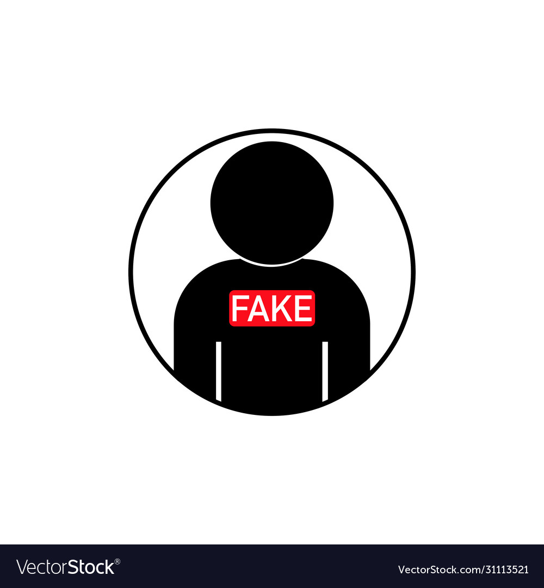

James Doe
1234 Ashley lane ·Austin, TX 22339 lane · 333-9983-9893 lane ·No@gmail.com

Education
Bachelor of Business Administration, Finance
Texas A&M University
2013-2017
Projects
Mousetrap Car Project
- Built a small vechicle only the power of a Mousetrap to travel the furthers distance.
- Reached the finals of the competition by working with the team, to improve our design.
Impeller Design
- Require moving 4.5 gallons of water laterally from one container to another in 1.5 minutes or less.
- Built a small impeller using Solidworks with maximum width 0.96, maximum height 0.2325 and 0.09 width across shaft D-key area.
Experience
Bank Teller
Cypress Bank, June 2020-Present
- Provide customer services such as cashing checks, receiving deposits, making withdrawals, and receiving loan payments.
- Balance cash drawer and other receipts daily, as well as ATM when required.
- Perform miscellaneous duties such as filing, ansering phones, maintaining supplies, etc.
Bank Teller
Credit Union of Texas, May 2019-June 2020
- Demonstrate enthusiatic support of Credit Union of Texas's vision, core values, employee creed, and long-term objectives.
- Protect members information and other sensitive information be maintaining confidentiality while adhering to the credit union's privacy policy.
- Accept responsibility for store security by securing keys, combinations, documents, records, and negotiable items.
Skills
- Operating Systems: Microsoft Windows OS and Apple Macintosh OSX
- Software: SQL, Solidworks, and Python.
- Experience in working alone, preferred working in a team environment.
- Experience in obtaining sensitive and personal information.
Other